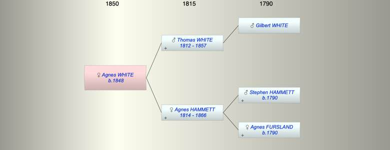

| [Index] |
| Agnes P WHITE (1848 - ) |
|  |
| b. 1848 at Stoke Damerel, Plymouth |
| Near Relatives of Agnes P WHITE (1848 - ) | ||||||
| Relationship | Person | Born | Birth Place | Died | Death Place | Age |
| Grandfather | Gilbert WHITE | |||||
| Grandfather | Stephen HAMMETT | abt 1790 | ||||
| Grandmother | Agnes FURSLAND | abt 1790 | ||||
| Father | Thomas WHITE | 1812 | 18 Jan 1857 | Plymouth | 45 | |
| Mother | Agnes HAMMETT | 1814 | Plymouth | 07 Jun 1866 | Plymouth | 52 |
| Self | Agnes P WHITE | 1848 | Stoke Damerel, Plymouth | |||
| Brother | Thomas WHITE | 1843 | Plymouth | |||
| Uncle | Nicholas John HAMMETT | 1812 | Plymouth | 1873 | Plympton St Mary | 61 |
| Aunt | Susan DURE | abt 1812 | 1891 | Plympton St Mary | 79 | |
| Aunt | Elizabeth HAMMETT | 1817 | Plymouth | |||
| Cousin | Robert H HAMMETT | 1838 | Stokenham | |||
| Cousin | Sarah Agnes HAMMETT | 1841 | Plymton | 1880 | 39 | |
| Cousin | Stephen HAMMETT | 16 Jun 1845 | Plympton St Mary | 29 Apr 1915 | Plymouth | 69 |
| Events in Agnes P WHITE (1848 - )'s life | |||||
| Date | Age | Event | Place | Notes | Src |
| 1848 | Agnes P WHITE was born | Stoke Damerel, Plymouth | |||
| 18 Jan 1857 | 9 | Death of father Thomas WHITE (aged 45) | Plymouth | Note 1 | |
| 07 Jun 1866 | 18 | Death of mother Agnes HAMMETT (aged 52) | Plymouth | Note 2 | |
| Created on a Mac™ using iFamily for Mac™ on 12 Sep 2023 |